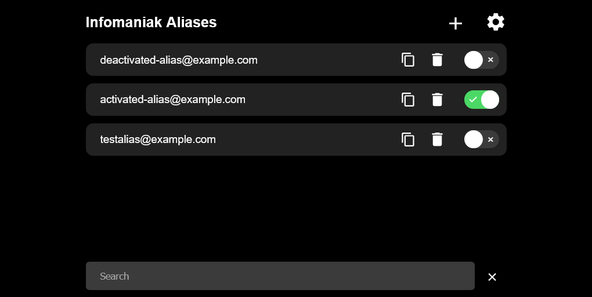

Infomaniak Alias Manager
The Alias Manager allows you to use an unlimited number of email aliases with Infomaniak, since the limit is 50.
The Manager uses a catch-all address to receive mails for all aliases. To prevent spam, a mail filter is used that only allows emails addressed to registered aliases to pass through. Emails sent to addresses not specified in the Manager are automatically moved into the spam folder.
New aliases are initially added only to the filter. Using a toggle, aliases can be created as actual aliases with Infomaniak as needed and can thus also be used for sending emails.
The manager stores everything locally and encrypted in a cookie. The backend (source) is just used to connect to the Infomaniak API and no data is stored.
Check the Infomaniak Alias Manager out

As described on Infomaniaks catch-all support page, catch-all addresses and therefore also this page are supported only by the following products. All of these products currently require a paid subscription.
- kSuite Pro Standard, Business and Enterprise
- Mail-Service (not the free Starter)